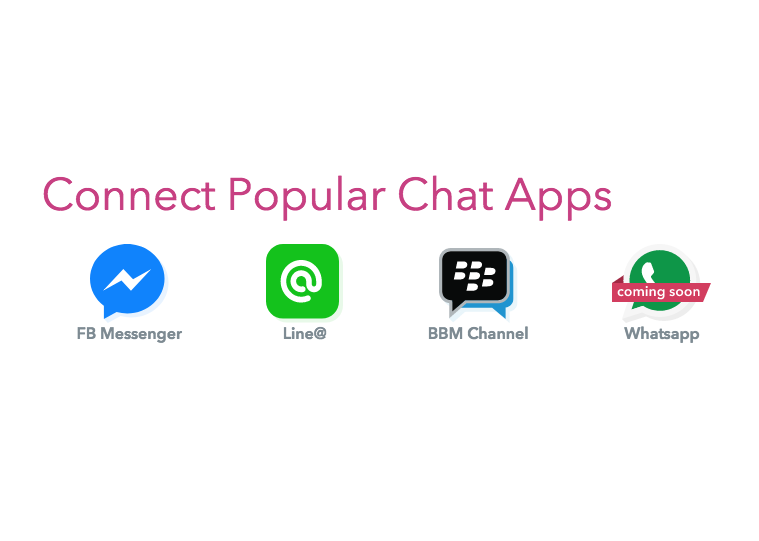
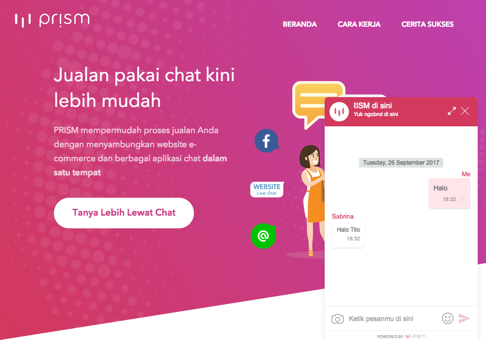
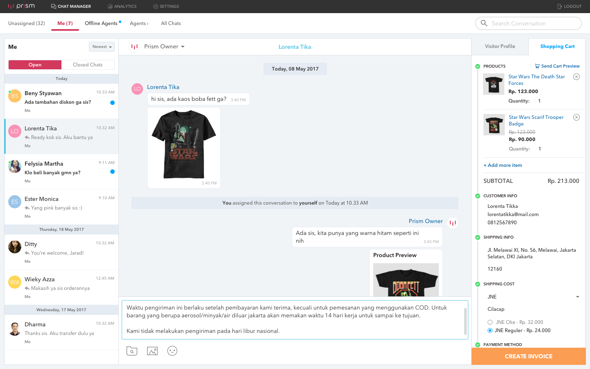

Snap (2017)
Snap is the main payment page of Midtrans. It allows for payments to be made without ever leaving the merchant’s wep page. A demo can be viewed HERE. Snap opens a popup that’ll show different payment options for the buyer and the whole payment process will be done through the popup. The product was developed on top of ReactJS and Ruby on Rails.
My involvement in the product encompasses the whole product development starting from back-end development, front-end development, UI and UX development, A/B testing, integration testing, and architecture. However, I am mainly focused in the software engineering aspects of it. My work on this product is done during my time as an employee of Midtrans.

Prism Third Party Channel Management (2016)
I was briefly responsible for creating third party channel management for Prism. Previously, Prism only supports chat with the online web chat widget. This new system allows prism to be integrated with Line and Facebook Messenger chat. The system was developed on Go and RabbitMQ along with Line and Facebook chat-bot API. My work on this product was done during my time as an employee of Midtrans.

Prism Widget (2016)
Prism Widget is a chat application for the web built on AngularJS. It is a chat widget that can be attached to any online store on the web. Online merchants would then be able to converse with the buyer and perform product checkout directly on the page. My work includes front-end development and product development. This was done during my time as an employee of Midtrans.

Prism Dashboard (2017)
Prism Dashboard is a user dashboard for Prism, a subsidiary of Midtrans. Its features include user management, user settings, product management, marketing campaign management, and online chat. This product was built on AngularJS.
In this project I was mainly responsible for the front-end development, however I also did a little bit of work on creating and modifying the layout and design. My work on this product was done during my time as an employee of Midtrans.
SocialLink / BBM Checkout (2015-2016)
SocialLink was an all-in-one product catalogue, shipping form, and checkout page built on AngularJS and Java. It was developed as a seller tool for Instagram sellers in Indonesia. SocialLink was later rebranded to be used on the BlackBerry Messenger platform in Indonesia as the official BBM Checkout.
I was mostly responsible for the front-end development of the web application. They include web design, splicing, and software engineering. This was done during my time as an employee of Midtrans.
FlappyType (2015)
FlappyType is a typing game with the nuances of the ever popular FlappyBird. It was created using html canvas to be used on the web. It can be played HERE
Tokopedia Train Ticket Portal (2015)
Tokopedia Train Ticket Portal is a web application for purchasing train tickets all throughout Indonesia built on NodeJS and Go. I did work on developing the payment system, the reservation system, user management system, and development of the mobile site. My involvement in developing this product was done during my time as an intern of Tokopedia.
Forres Eyewear Online Store (2015)
This is an online shop made from scratch written in PHP for an eyewear company. The features of the site include product catalogue, gallery, and an order form. My part in the development include requirement engineering, web design, development of the site, and setting up the server. The site was developed in a team of two.
Ganesha Basketball Season Website (2014)
This is the website for the 2014 Ganesha Basketball Season, an interfaculty basketball competition among the students of Bandung Institute of Technology. The website was developed using Wordpress. Its features include match schedules, team statistics, player statistics, a gallery, and a news page. In this project I was mostly involved in the front-end development for periodically updating the information on the site. The site was developed in a team of five.
Bandung Instute of Technology Student Body Website (2013)
This was my first ever solo freelance project. I was hired to redesign and revamp the UI of the Bandung Institute of Technology Student Body Website. The site was developed on Wordpress, and I was responsible for creating the layout and implementation of my own custom Wordpress theme used on the site.
{kind=link}
{kind=link}
{kind=link}
{kind=link}
{kind=link}
{kind=link}
{kind=link}
{kind=link}
{kind=link}
{kind=link}